Souvenir Words | Bornholm
09.Jul.2025 - 10.Jul.2025
Bornholm was an island that ran on its own clock.
People spoke slowly, as if there was always enough time,
and every conversation seemed to end with a smile.
I drew by the sea, and the pages filled up a little more gently.
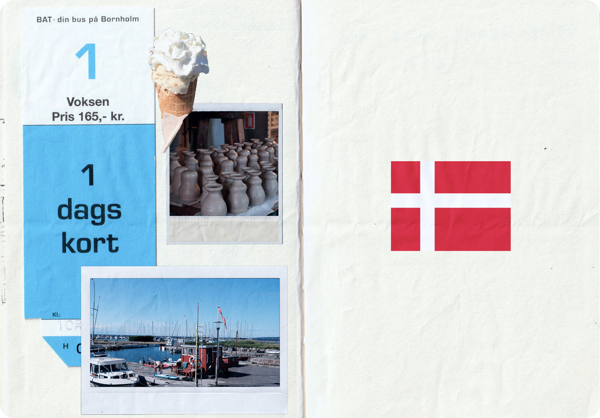
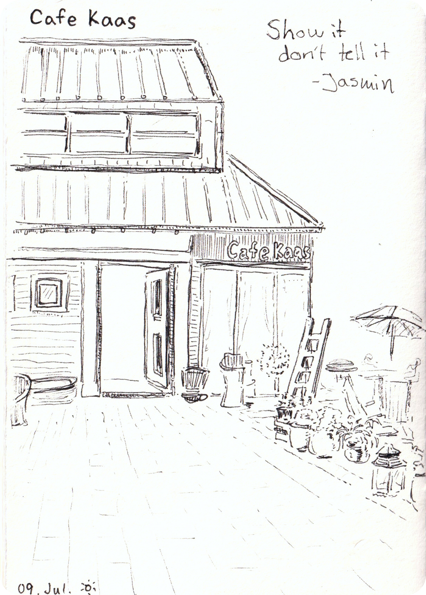
“Show it, don’t tell it.”
Jasmin, Cafe Kaas · 09.Jul.2025
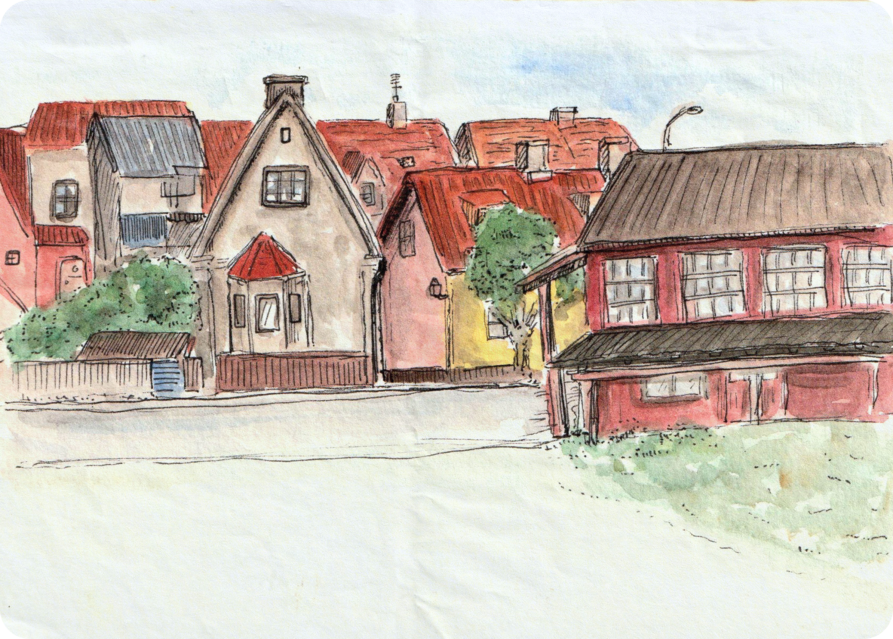
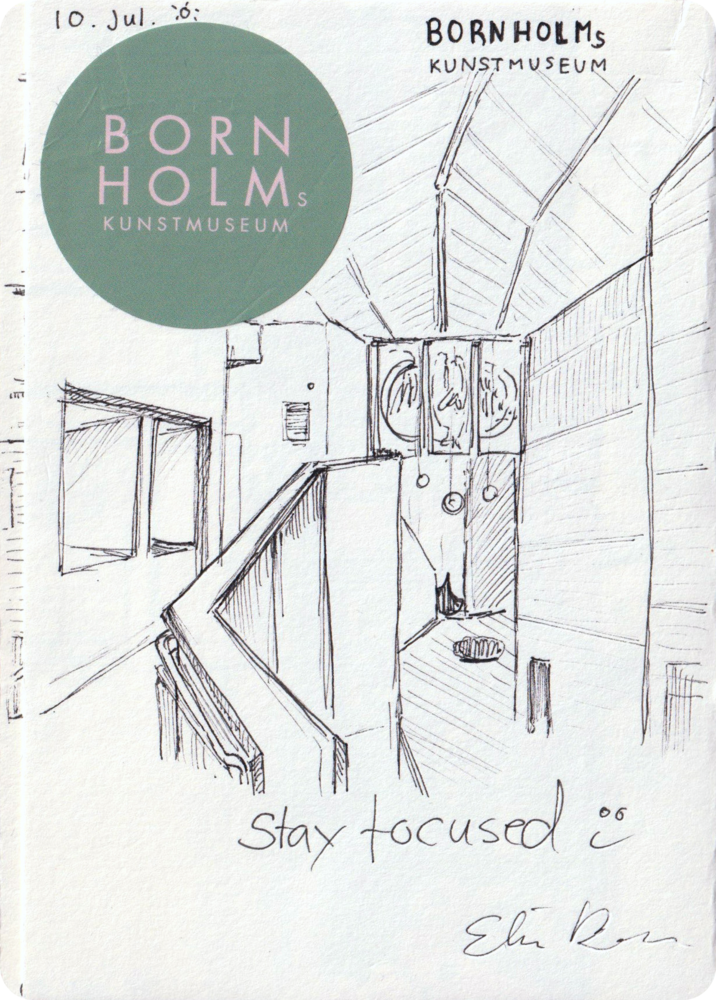
“Stay focused.”
Elin R., BORNHOLMS KUNSTMUSEUM · 10.Jul.2025
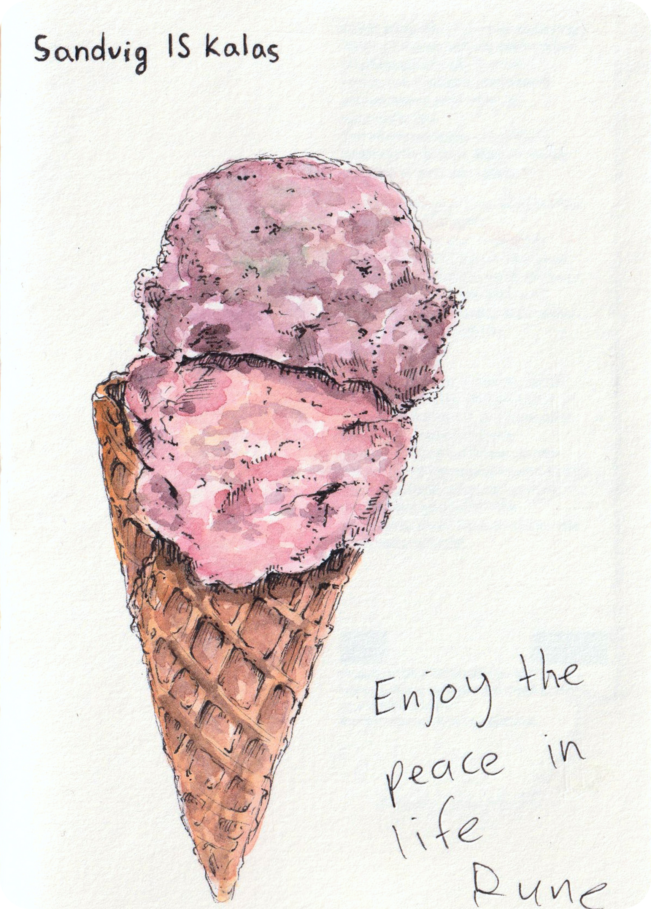
“Enjoy the peace in life.”
Rune, Sandvig IS Kalas · 10.Jul.2025
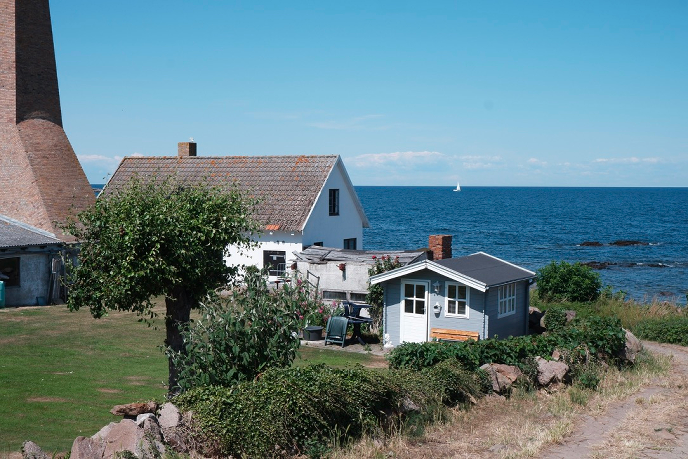
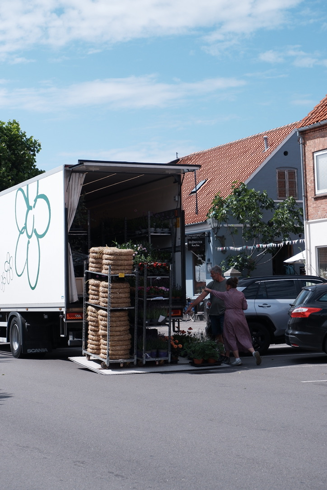
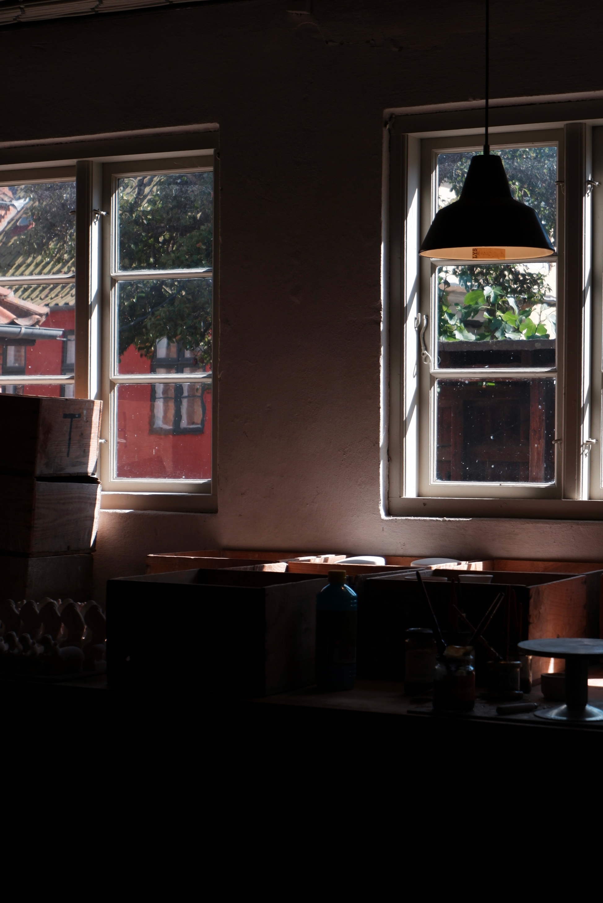
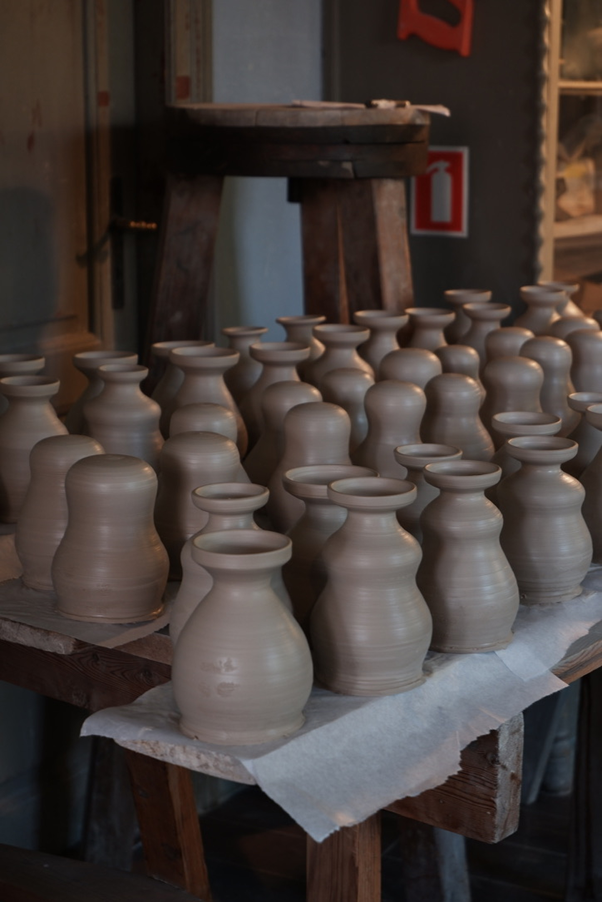
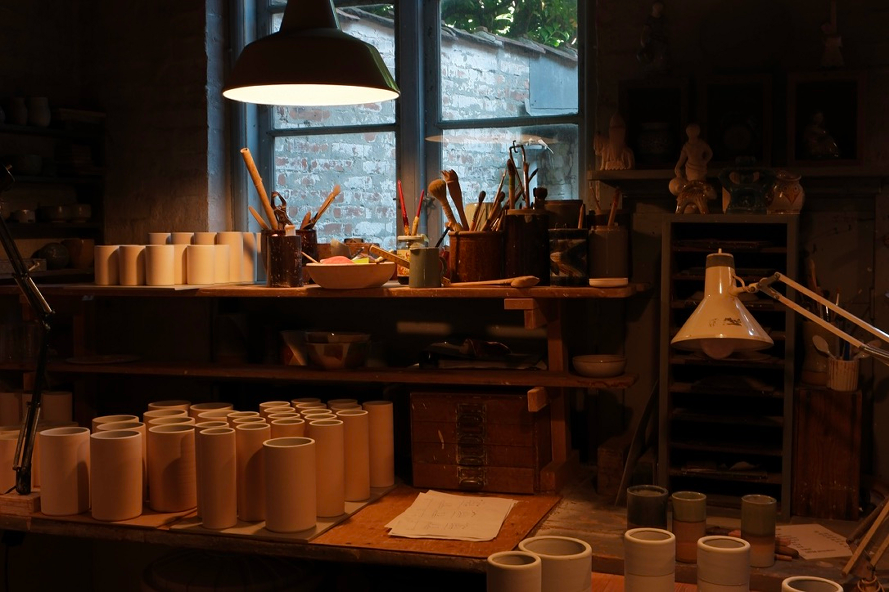
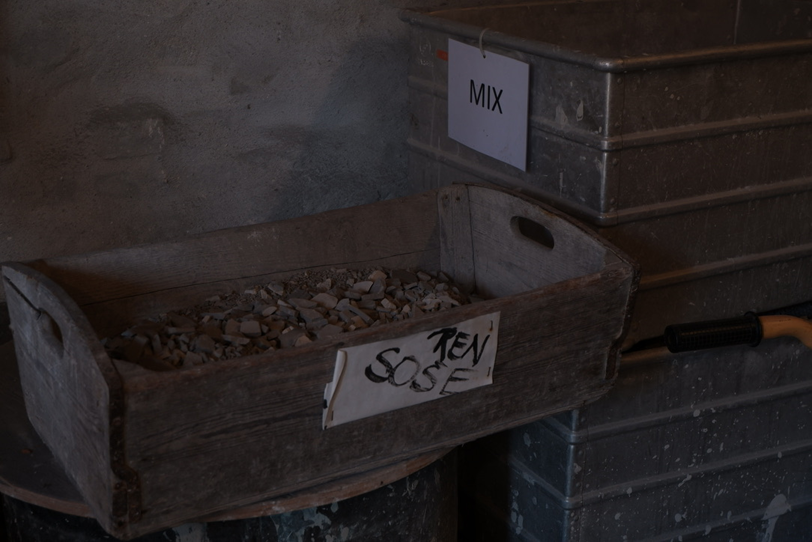
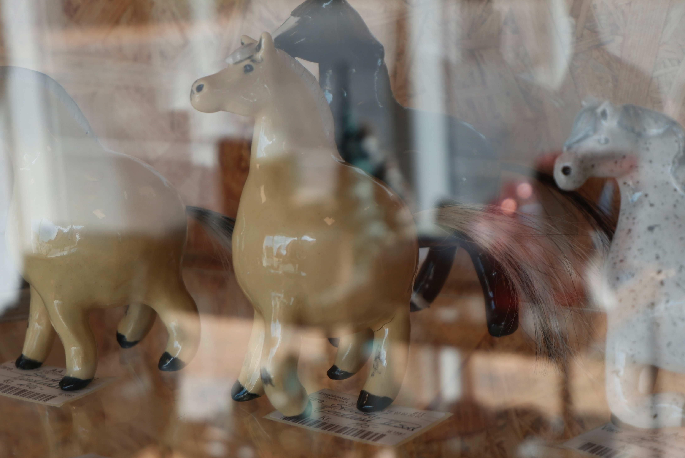
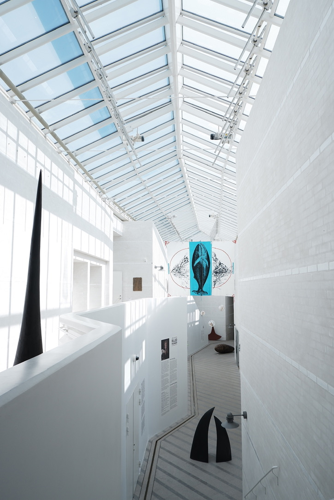
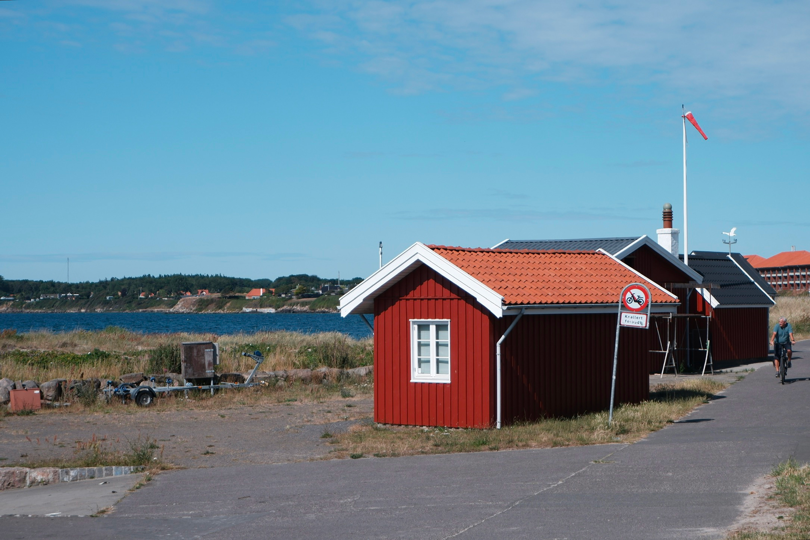